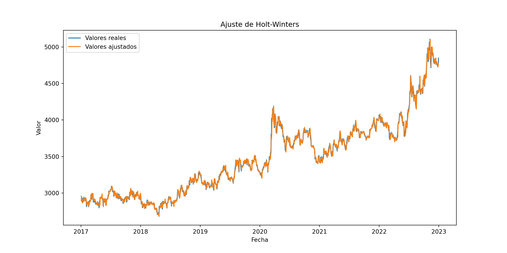
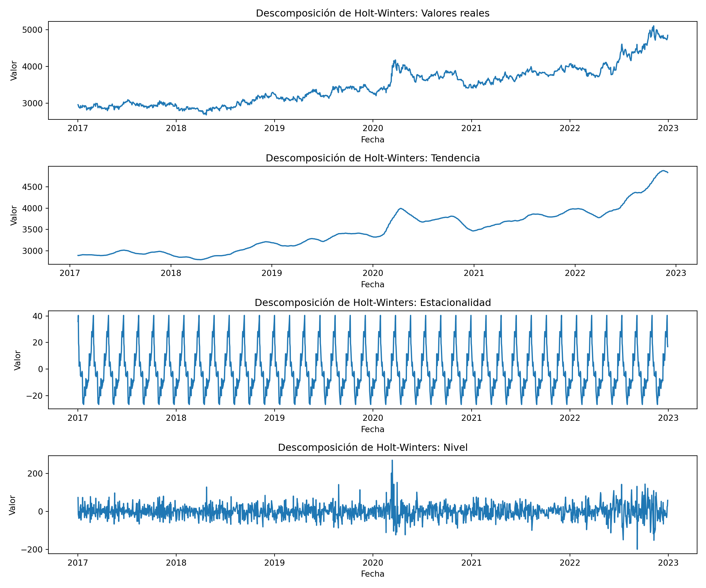
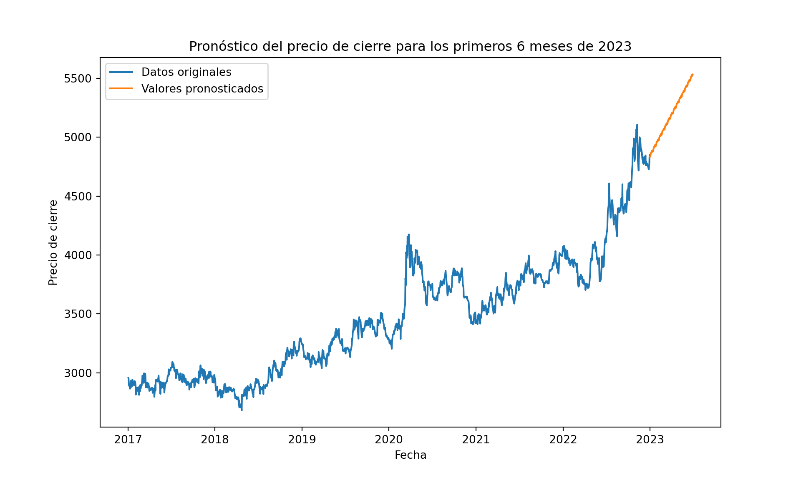

Capitulo 7 Metodo Holt-Winter {#h&w}
import pandas as pd
import statsmodels.api as sm
import matplotlib.pyplot as plt
# Preparar los datos para el análisis de Holt-Winters
data["Date"] = pd.to_datetime(data["Date"])
data.set_index("Date", inplace=True)
values = data["Adj Close"]
# Aplicar el modelo de Holt-Winters y obtener los valores ajustados
model = sm.tsa.ExponentialSmoothing(values, trend="add", seasonal="add", seasonal_periods=12)## C:\Users\carlos\AppData\Local\R-MINI~1\envs\R-RETI~1\lib\site-packages\statsmodels\tsa\base\tsa_model.py:473: ValueWarning:
##
## A date index has been provided, but it has no associated frequency information and so will be ignored when e.g. forecasting.results = model.fit()
fitted_values = results.fittedvalues
# Graficar los valores reales y los valores ajustados
plt.figure(figsize=(12, 6))
plt.plot(data.index, values, label="Valores reales")
plt.plot(data.index, fitted_values, label="Valores ajustados")
plt.xlabel("Fecha")
plt.ylabel("Valor")
plt.title("Ajuste de Holt-Winters")
plt.legend()
plt.show() En el grafico muestra la aplicación el método de Holt-Winters a los datos de precios de cierre ajustados con los valores reales y los valores ajustados por el modelo.
import pandas as pd
import statsmodels.api as sm
import matplotlib.pyplot as plt
# Aplicar el modelo de Holt-Winters y obtener los componentes
model = sm.tsa.ExponentialSmoothing(values, trend="add", seasonal="add", seasonal_periods=40)## C:\Users\carlos\AppData\Local\R-MINI~1\envs\R-RETI~1\lib\site-packages\statsmodels\tsa\base\tsa_model.py:473: ValueWarning:
##
## A date index has been provided, but it has no associated frequency information and so will be ignored when e.g. forecasting.results = model.fit()
fitted_values = results.fittedvalues
# Obtener los componentes de la descomposición
residuals = values - fitted_values
decomposition = sm.tsa.seasonal_decompose(values, model="additive", period=40)
# Graficar los componentes
plt.figure(figsize=(12, 10))
plt.subplot(4, 1, 1)
plt.plot(data.index, values, label="Valores reales")
plt.xlabel("Fecha")
plt.ylabel("Valor")
plt.title("Descomposición de Holt-Winters: Valores reales")
plt.subplot(4, 1, 2)
plt.plot(data.index, decomposition.trend, label="Tendencia")
plt.xlabel("Fecha")
plt.ylabel("Valor")
plt.title("Descomposición de Holt-Winters: Tendencia")
plt.subplot(4, 1, 3)
plt.plot(data.index, decomposition.seasonal, label="Estacionalidad")
plt.xlabel("Fecha")
plt.ylabel("Valor")
plt.title("Descomposición de Holt-Winters: Estacionalidad")
plt.subplot(4, 1, 4)
plt.plot(data.index, residuals, label="Nivel")
plt.xlabel("Fecha")
plt.ylabel("Valor")
plt.title("Descomposición de Holt-Winters: Nivel")
plt.tight_layout()
plt.show() El grafico muestra la tendencia, estacionalidad y nivel sobre el precio de cierre para una ventana de 40 periodos. Se evidencia una clara tendencia al alza particularmente luego de mayo de 2022 y una estacionalidad marcada en los precios de cierre en los años evaluados.
import pandas as pd
import yfinance as yf
import statsmodels.api as sm
# Descargar los datos desde Yahoo Finance
data = yf.download("COP=X", start="2017-01-01", end="2022-12-31")##
[*********************100%***********************] 1 of 1 completeddata.to_csv("data.csv")
# Leer los datos desde el archivo CSV
data = pd.read_csv("data.csv", index_col="Date")
# Convertir el índice a formato de fecha
data.index = pd.to_datetime(data.index)
# Obtener los valores de cierre ajustados
values = data["Adj Close"]
# Aplicar el modelo de Holt-Winters y generar los pronósticos con intervalos de confianza
model = sm.tsa.ExponentialSmoothing(values, trend="add", seasonal="add", seasonal_periods=12)## C:\Users\carlos\AppData\Local\R-MINI~1\envs\R-RETI~1\lib\site-packages\statsmodels\tsa\base\tsa_model.py:473: ValueWarning:
##
## A date index has been provided, but it has no associated frequency information and so will be ignored when e.g. forecasting.results = model.fit()
forecast = results.forecast(steps=120) # Pronosticar 120 días (4 meses)
# Obtener las fechas del pronóstico## C:\Users\carlos\AppData\Local\R-MINI~1\envs\R-RETI~1\lib\site-packages\statsmodels\tsa\base\tsa_model.py:836: ValueWarning:
##
## No supported index is available. Prediction results will be given with an integer index beginning at `start`.
##
## C:\Users\carlos\AppData\Local\R-MINI~1\envs\R-RETI~1\lib\site-packages\statsmodels\tsa\base\tsa_model.py:836: FutureWarning:
##
## No supported index is available. In the next version, calling this method in a model without a supported index will result in an exception.start_date = pd.Timestamp("2023-01-01")
forecast_dates = pd.date_range(start=start_date, periods=120, freq='D')
# Obtener los valores pronosticados y crear una tabla con las fechas
forecast_values = forecast[:120]
forecast_table = pd.DataFrame({'Fecha': forecast_dates, 'Pronóstico': forecast_values})
print(forecast_table)## Fecha Pronóstico
## 1564 2023-01-01 4833.047005
## 1565 2023-01-02 4834.832076
## 1566 2023-01-03 4844.400407
## 1567 2023-01-04 4860.289396
## 1568 2023-01-05 4864.102784
## ... ... ...
## 1679 2023-04-26 5290.749566
## 1680 2023-04-27 5292.066841
## 1681 2023-04-28 5306.720524
## 1682 2023-04-29 5300.319853
## 1683 2023-04-30 5305.469107
##
## [120 rows x 2 columns]La tabla muestra el pronóstico para 6 meses posterior a la ultima fecha de los precios de cierre considerando una ventana de 16 meses.
import pandas as pd
import yfinance as yf
import statsmodels.api as sm
import matplotlib.pyplot as plt
# Descargar los datos desde Yahoo Finance
data = yf.download("COP=X", start="2017-01-01", end="2022-12-31")##
[*********************100%***********************] 1 of 1 completeddata.to_csv("data.csv")
# Leer los datos desde el archivo CSV
data = pd.read_csv("data.csv", index_col="Date")
# Convertir el índice a formato de fecha
data.index = pd.to_datetime(data.index)
# Obtener los valores de cierre ajustados
values = data["Adj Close"]
# Aplicar el modelo de Holt-Winters y generar los pronósticos con intervalos de confianza
model = sm.tsa.ExponentialSmoothing(values, trend="add", seasonal="add", seasonal_periods=12)## C:\Users\carlos\AppData\Local\R-MINI~1\envs\R-RETI~1\lib\site-packages\statsmodels\tsa\base\tsa_model.py:473: ValueWarning:
##
## A date index has been provided, but it has no associated frequency information and so will be ignored when e.g. forecasting.results = model.fit()
forecast = results.forecast(steps=180) # Pronosticar 180 días (6 meses)
# Obtener las fechas del pronóstico## C:\Users\carlos\AppData\Local\R-MINI~1\envs\R-RETI~1\lib\site-packages\statsmodels\tsa\base\tsa_model.py:836: ValueWarning:
##
## No supported index is available. Prediction results will be given with an integer index beginning at `start`.
##
## C:\Users\carlos\AppData\Local\R-MINI~1\envs\R-RETI~1\lib\site-packages\statsmodels\tsa\base\tsa_model.py:836: FutureWarning:
##
## No supported index is available. In the next version, calling this method in a model without a supported index will result in an exception.start_date = pd.Timestamp("2023-01-01")
forecast_dates = pd.date_range(start=start_date, periods=180, freq='D')
# Obtener los valores pronosticados
forecast_values = forecast[:180]
# Crear una figura y graficar los datos originales
plt.figure(figsize=(10, 6))
plt.plot(data.index, values, label="Datos originales")
# Graficar los valores pronosticados
plt.plot(forecast_dates, forecast_values, label="Valores pronosticados")
# Configurar etiquetas y título del gráfico
plt.xlabel("Fecha")
plt.ylabel("Precio de cierre")
plt.title("Pronóstico del precio de cierre para los primeros 6 meses de 2023")
# Mostrar la leyenda
plt.legend()
# Mostrar el gráfico
plt.show() Muestra grafíca de los precio de cierre pronosticados.A simple vista se puede observar que el metodo de Holt-Winter no parece tener buenos resultados en dicha predicción, si tan solo consideramos los valores de precio en el tiempo.